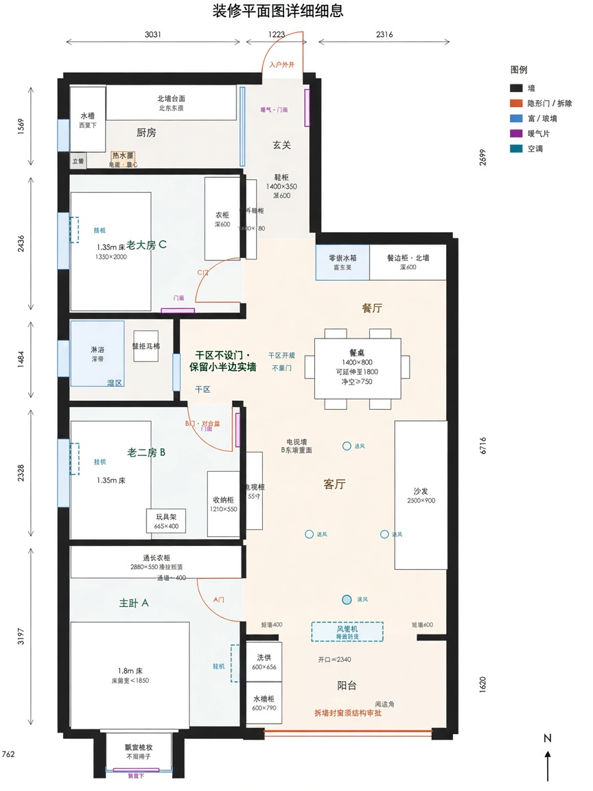

装修平面图修订版
百瑞景中央生活区六期 · F 户型（约 90㎡）· 在原装修方案基础上落实审核修改：卫浴干区保留小半边实墙、不设门；鞋柜加深、老二房收纳精简、电视墙隔音与阳台拆改施工注记。

修订版平面效果图（下方为可缩放矢量对照图）
水槽
灶
热水器
厨房
入户
鞋柜 1400×350
修订加深（原180）
暖气
净距≥200
零嵌冰箱
侧柜
600深
餐桌 1400×800
建议可伸缩至 1800
边距 ≥750
餐厅
玄关
老大房 C
床 1350×2000
衣柜 600
挂机
C 暗门
湿区
淋浴
壁挂马桶
干区
台盆+镜柜
1020×480
保留小半边实墙
干区不设门（开敞）
卫浴
老二房 B
床 1350×2000
壁挂玩具置物（修订）
矮柜 900×450
原 1210×550 缩小
活动区
薄柜
挂机
B 暗门
主卧 A
床 1.8m · 架≤1850
通顶衣柜 2880×550
挂机
A 暗门
飘窗梳妆（无椅）
客厅
55″ TV
电视墙隔音层
（阻尼+吸音棉）
沙发 2500×900
风管机（阳台梁下）
送风
回风
原隔墙拆除（须结构确认）
阳台
洗烘叠放
600×656
水槽柜
阅读角
外窗封窗拆除重做 · 施工前报批
走廊
走廊
3031
1223
2316
总宽 6570
1569
2436
1484
2328
3197
762
N
装修平面图 · 修订版
绿色标注 = 本次按审核意见修改 · 橙色虚线 = 暗门/拆除